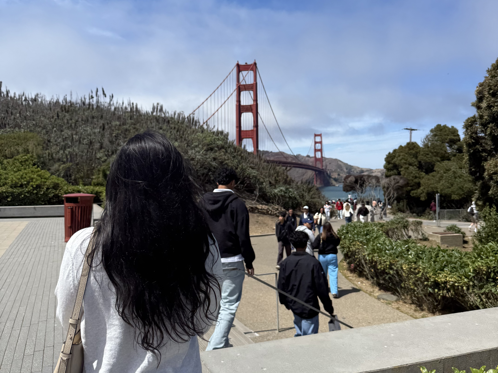

Photos by the month
12 months of my camera roll, November 2025 to October 2026.
Every photo on my phone is a small piece of evidence about where I was and who I was with. For this page I counted how many photos I took in each month from November 2025 through October 2026, and I wanted to see whether the numbers matched how the year felt. Mostly they do, but a few months surprised me.
Photos taken per month
Based on my own camera roll. Hover over or tap a bar to see what was happening that month.
What the chart shows
The first thing that stands out is August 2026, with 514 photos, more than any other month by a wide margin. Summer let me spread out. I went to New Jersey for a wedding, visited a friend, celebrated a few family birthdays, and took a trip to San Francisco with friends, which produced most of the photos that month. A trip with friends in a new city means constant photo stops, group shots, and pictures of food, and the count shows it.
October 2026 comes in second at 426 photos, which I did not expect since I was back at school. The month included my dance team photoshoot, dressing up for garba, Halloween, and a family party. Planned events with outfits and makeup lead to a lot of photos, even when they happen close to campus.
The quiet months are just as telling. February 2026 has the lowest count at 75 because it was so busy that I rarely stopped to take pictures. December and January stayed under 100 because winter break was uneventful. Most other months land between 100 and 180, with small bumps for visiting friends at their college in November, a dance competition weekend and a trip to Chicago in March, and Acadia National Park in May.
In total I took 2,188 photos across these 12 months, an average of about 182 per month. The average hides the real pattern, though. Most of my year is a steady trickle of photos, and a few trips and events account for a big share of the rest.

My five biggest months
- August 2026 (514): a wedding in New Jersey, a friend visit, family birthdays, and the San Francisco trip.
- October 2026 (426): dance team photoshoot, garba, Halloween, and a family party.
- September 2026 (177): back at college, housewarmings, birthday parties, and a club event I photographed.
- May 2026 (166): the last week of the semester, Acadia National Park, and a friend’s birthday dinner.
- November 2025 (156): a weekend visiting friends at their college.